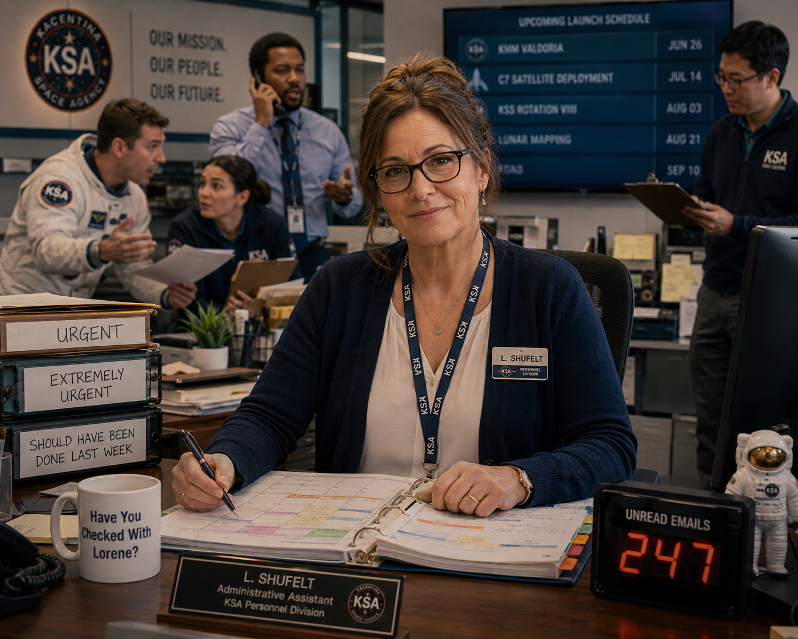
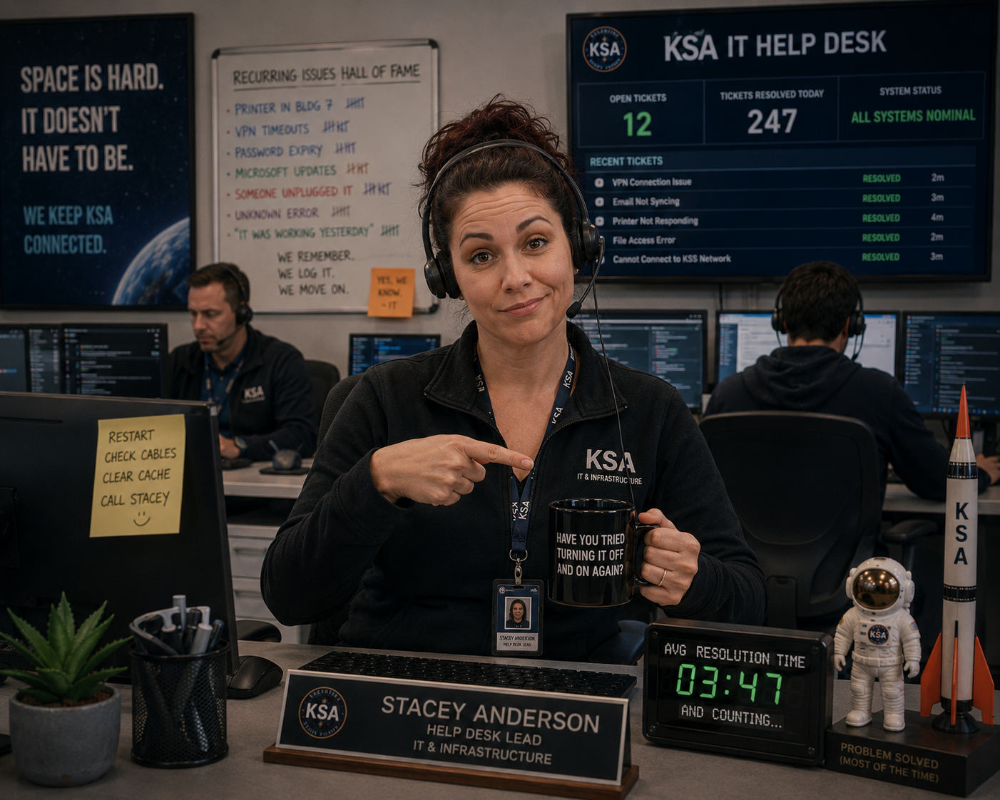
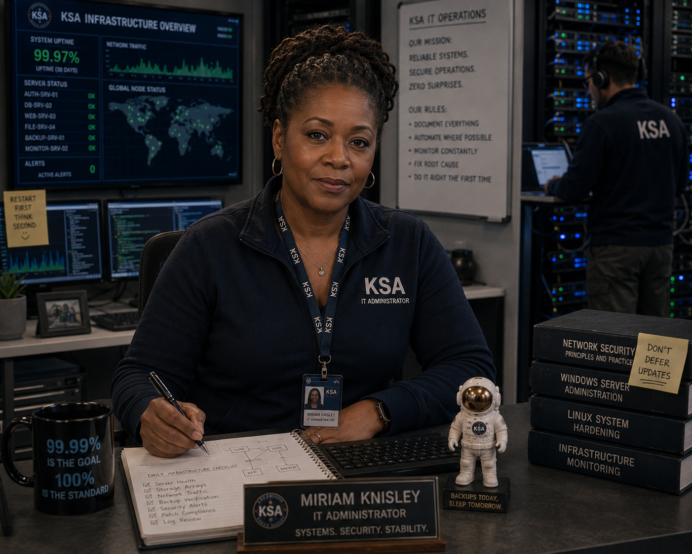
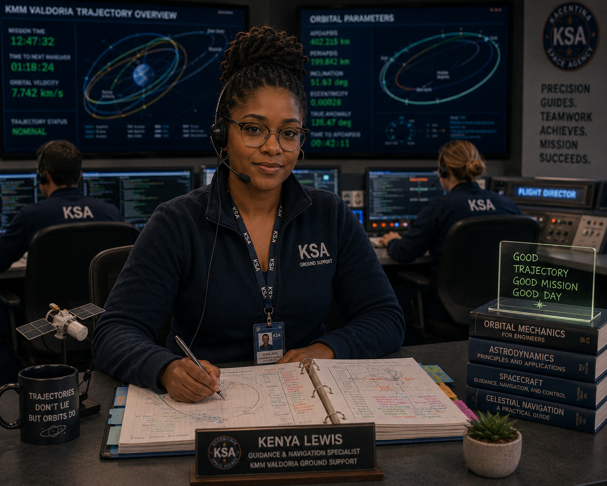
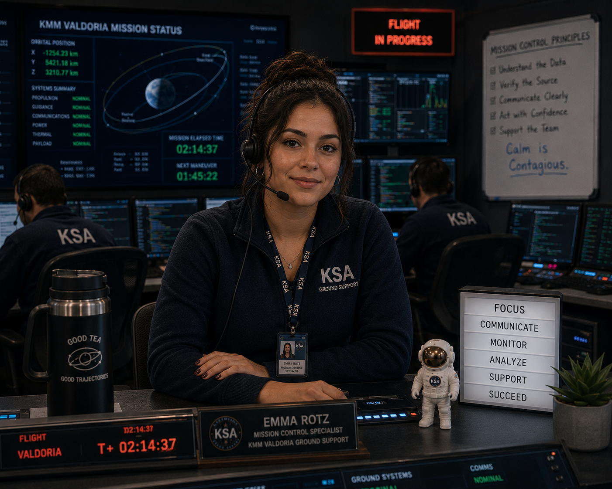
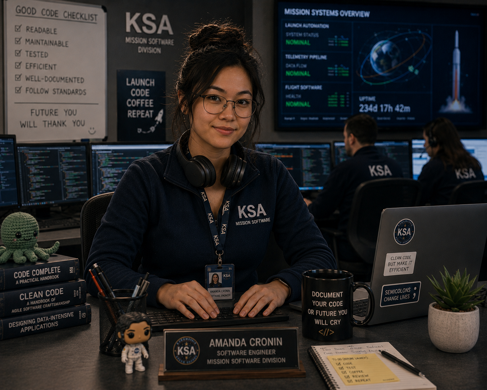
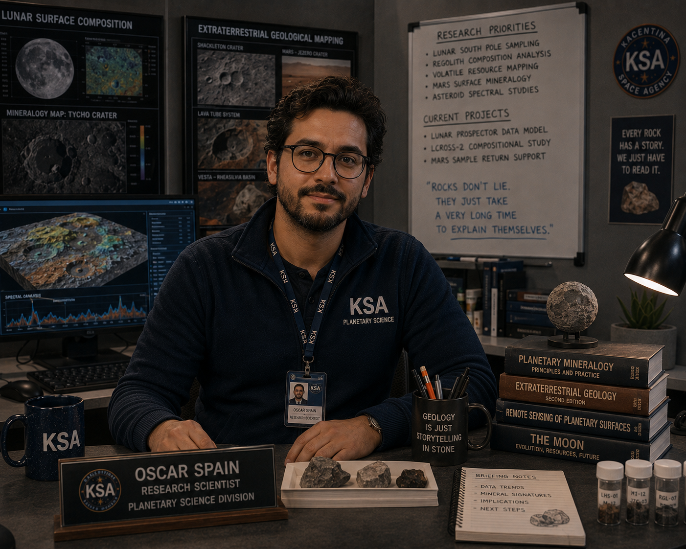
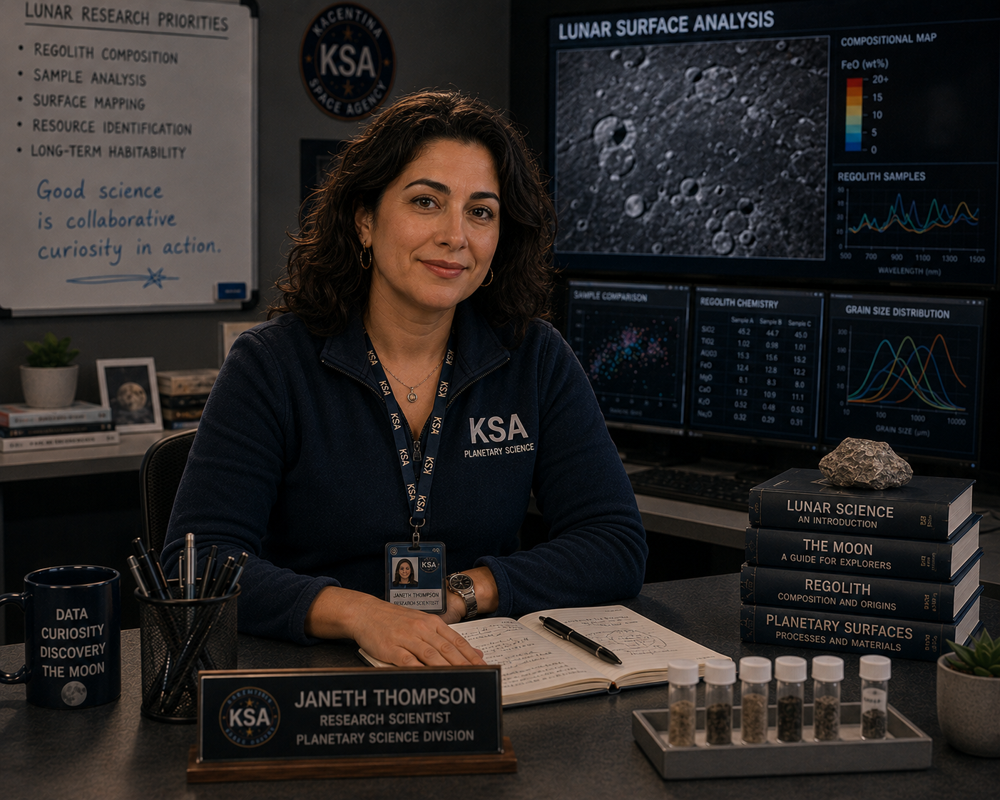
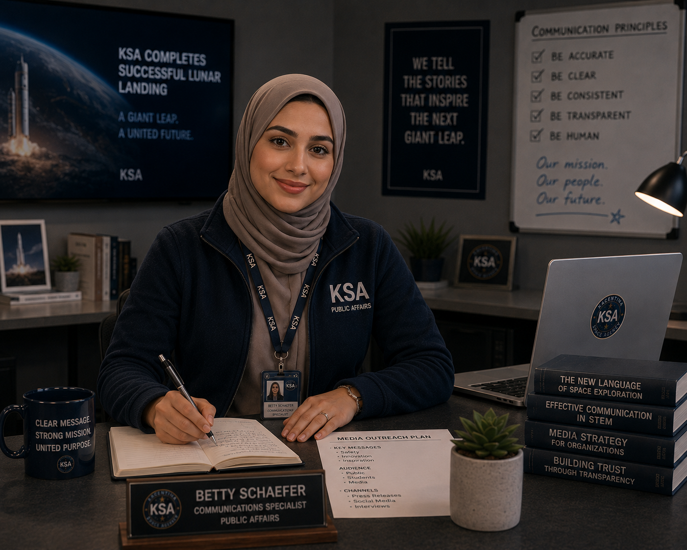

The dedicated professionals behind every launch. Administrators, engineers, scientists, and specialists who keep Kacentina's space program running every single day.
| Employee | Title | Division | Status |
|---|---|---|---|
| Lorene Shufelt | Administrative Assistant | Administration & Operations | Active |
| Stacey Anderson | Help Desk Lead | IT & Infrastructure | Active |
| Kenya Lewis | Guidance & Navigation Specialist | Navigation & Flight Operations | Active |
| Amanda Cronin | Software Engineer | Mission Software | Active |
| Oscar Spain | Research Scientist | Planetary Science | Active |
| Miriam Knisley | IT Administrator | IT & Infrastructure | Active |
| Betty Schaefer | Communications Specialist | Public Affairs | Active |
| Emma Rotz | Mission Control Specialist | Navigation & Flight Operations | Active |
| Janeth Thompson | Research Scientist | Planetary Science | Active |
| Gerald Trotter | IT Administrator | IT & Infrastructure | Active |

Lorene Shufelt has been the organizational backbone of the KSA Personnel Division for over a decade, coordinating schedules, managing interdepartmental communications, and somehow keeping everything running on time despite everyone around her doing their best to prevent it. Known across the agency for her encyclopedic knowledge of KSA procedures and her uncanny ability to locate any document filed in the wrong folder, Shufelt has supported six different division heads over her career and quietly outlasted most of them. Her colleagues consider her the most indispensable person in the building — a fact she accepts with calm dignity and an inbox count that would floor most people.

Stacey Anderson runs the KSA IT Help Desk with a combination of patient efficiency and barely-contained exasperation that her team considers both inspiring and deeply relatable. Since taking over as Help Desk Lead, she has cut average ticket resolution time to under four minutes and built a team capable of handling simultaneous infrastructure crises without completely losing their minds — most of the time. Known for responding to support tickets faster than they can be submitted and for maintaining a comprehensive log of every recurring issue the agency has collectively refused to permanently fix, Anderson is the first call anyone makes when something stops working and the last call they want to make because she will ask if they tried restarting it.

Miriam Knisley is an IT Administrator responsible for managing server infrastructure, endpoint security, and network monitoring across KSA's primary campus. With thirteen years of experience in enterprise IT, she has built a reputation for maintaining some of the tightest system monitoring logs in the division and catching infrastructure problems before the rest of the team knows they exist. Known for her thorough documentation, her low tolerance for deferred updates, and her legendary ability to diagnose a failing drive by the sound it makes from across the room, Knisley is the quiet, methodical force that keeps KSA's digital infrastructure humming every hour of every day.
Gerald Trotter manages network infrastructure, system reliability, and server operations for KSA's technical campus. With a decade of experience keeping mission-critical systems online under demanding conditions, Trotter has built a reputation as the person who answers the phone at 2am and sounds fully awake and already working on it. Known for his methodical troubleshooting process, his extensive after-hours availability, and his quiet pride in a network uptime record he considers deeply personal, Trotter is the unsung foundation of KSA's technical reliability — a fact he acknowledges with a shrug and an ongoing request for better monitoring software.

Kenya Lewis is a Guidance and Navigation Specialist who works alongside the KSA navigation team to calculate and monitor mission trajectories with meticulous precision. Since joining the Ground Operations division, she has earned a reputation for staying perfectly focused through the most complex orbital adjustment windows while her colleagues are still reaching for their morning coffee. Known for producing color-coded flight charts that no one else fully understands and for a genuine, barely-containable enthusiasm for trajectory mechanics, Lewis is considered one of the sharpest technical minds in the Mission Control building — and one of the quieter ones, which somehow makes her even more intimidating.

Emma Rotz is a Mission Control Specialist who monitors telemetry, coordinates communications between flight teams, and manages real-time mission data during active operations. Since joining the Ground Operations team, she has supported five KSA missions and logged over four thousand hours on the control room floor, developing a reputation for calm, reliable performance during high-pressure monitoring windows. Known for her sharp eye for anomalies in live flight data and her habit of arriving fifteen minutes early to every shift with a very large thermos of tea, Rotz is one of the most dependable members of the Mission Control team and the first person everyone looks at when something unexpected shows up on the board.

Amanda Cronin is a Software Engineer in KSA's Mission Software Division, where she designs and maintains the systems that support launch automation and real-time flight telemetry. Since joining the agency, she has contributed to eight major KSA programs and developed a reputation for writing exceptionally clean, well-documented code — something her colleagues appreciate far more than they tend to say out loud. Known for her quiet intensity during development sprints and her surprisingly strong opinions about code formatting standards, Cronin brings both technical rigor and an unexpected sense of humor to every review session, assuming anyone can get her to take the headphones off long enough to attend.

Oscar Spain is a Research Scientist in KSA's Planetary Science Division, specializing in surface composition analysis and geological mapping of extraterrestrial bodies. A prolific researcher with over a dozen published studies to his name, he has been a fixture in KSA's science wing for nearly a decade and has contributed data models to multiple active lunar research programs. Known for his deep expertise in mineralogy, his extremely thorough presentations, and his unshakeable conviction that every geological formation is more interesting than whatever else is currently being discussed, Spain is a highly respected voice in the agency's science community — even when people have quietly started timing his briefings.

Janeth Thompson is a Research Scientist in KSA's Planetary Science Division, where she focuses on lunar surface analysis and regolith composition studies supporting the agency's long-term lunar exploration objectives. One of KSA's most cited internal researchers, Thompson has contributed to eighteen studies over twelve years with the agency and is known for her deeply collaborative approach and her ability to find meaningful connections across datasets that nobody else thought to compare. She runs the kind of research briefings that people actually leave feeling genuinely excited, which is either a remarkable skill or deeply suspicious, depending on which department you're from.

Betty Schaefer is a Communications Specialist in KSA's Public Affairs office, where she manages media relations, drafts official agency statements, and handles the delicate art of translating complicated aerospace milestones into language the general public finds exciting rather than baffling. Since joining the team, she has written over two hundred press releases and developed a communication style that colleagues describe as polished, precise, and occasionally a little too good at making everything sound calm. Fluent in three languages and in possession of an almost supernatural ability to hit deadlines, Schaefer is the person the agency turns to when it needs to say something important — and say it exactly right.